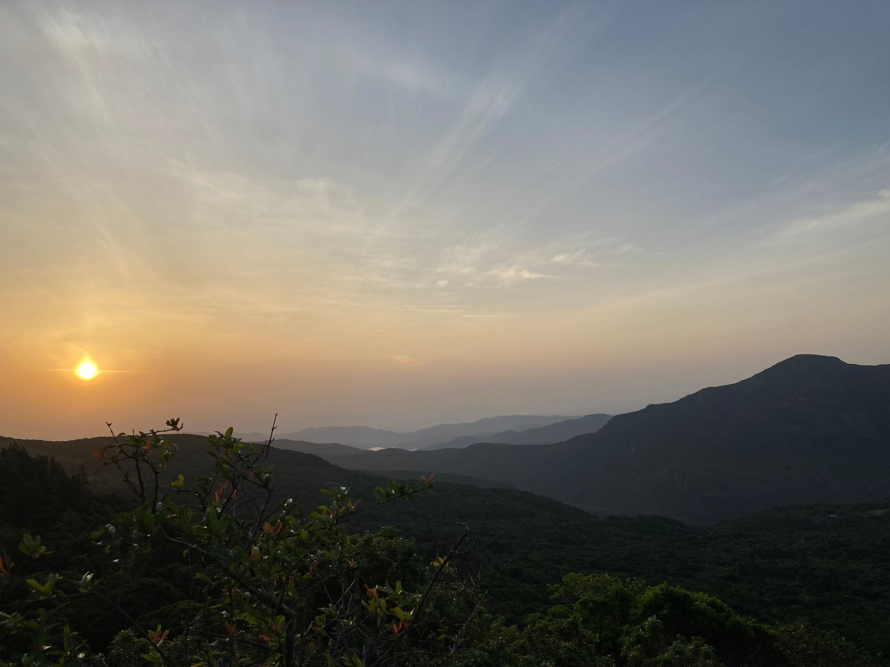
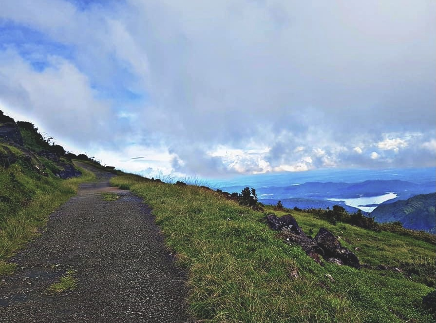
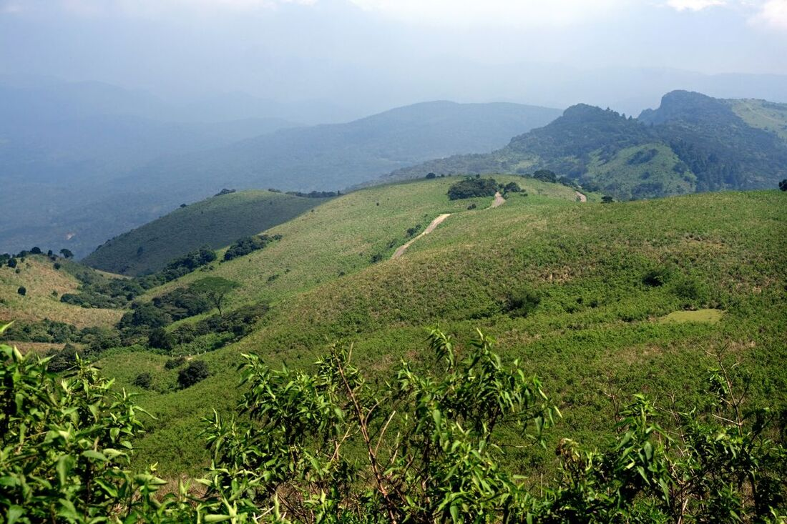
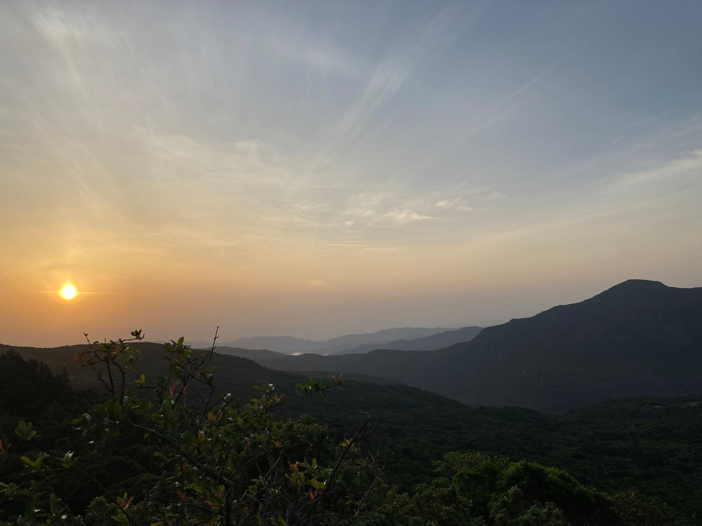
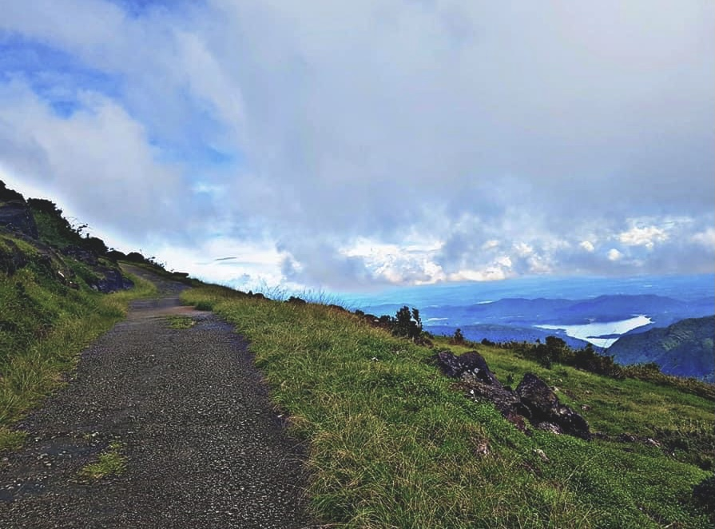
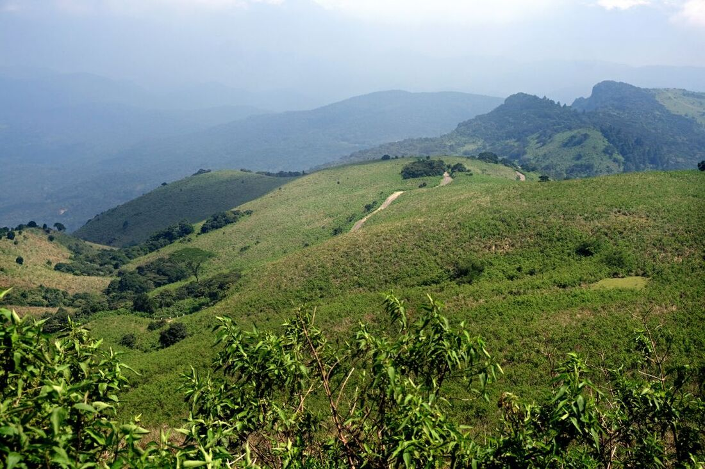
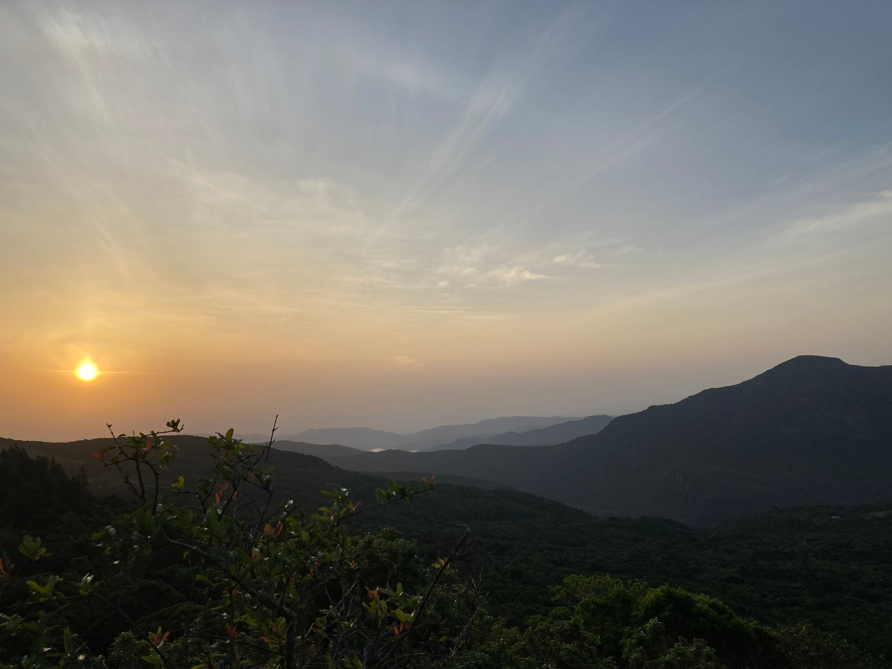
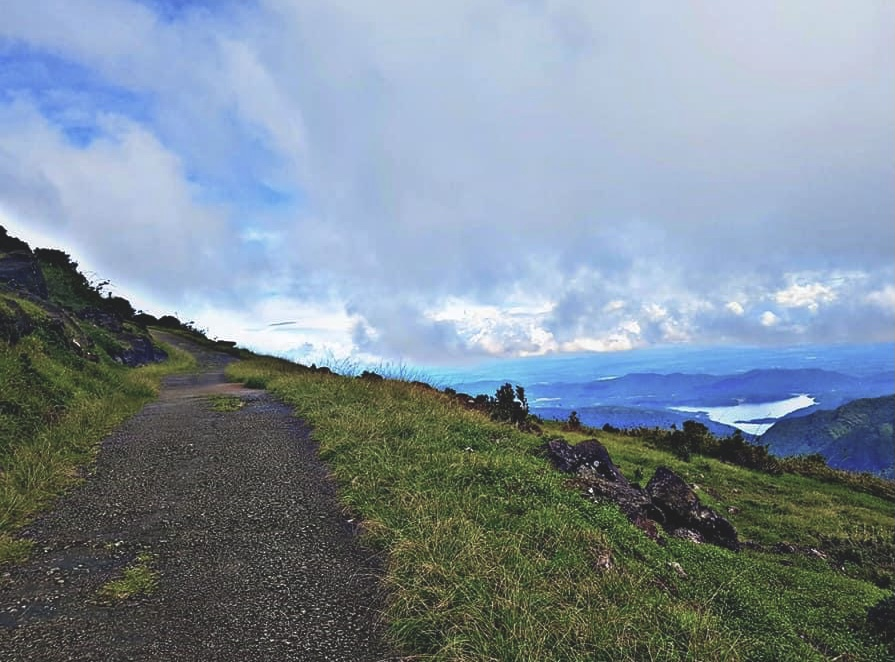
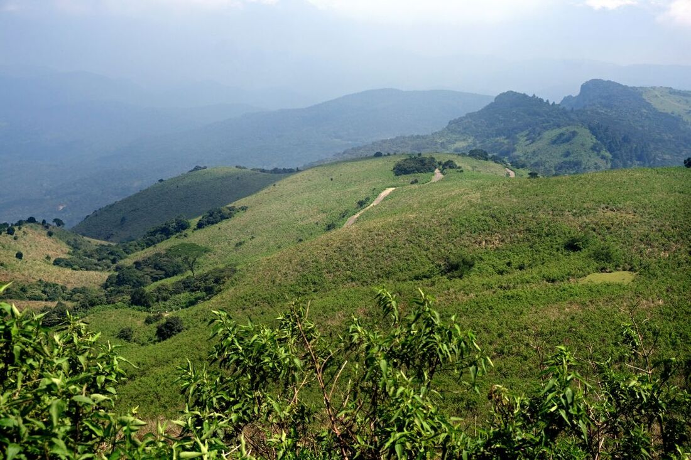
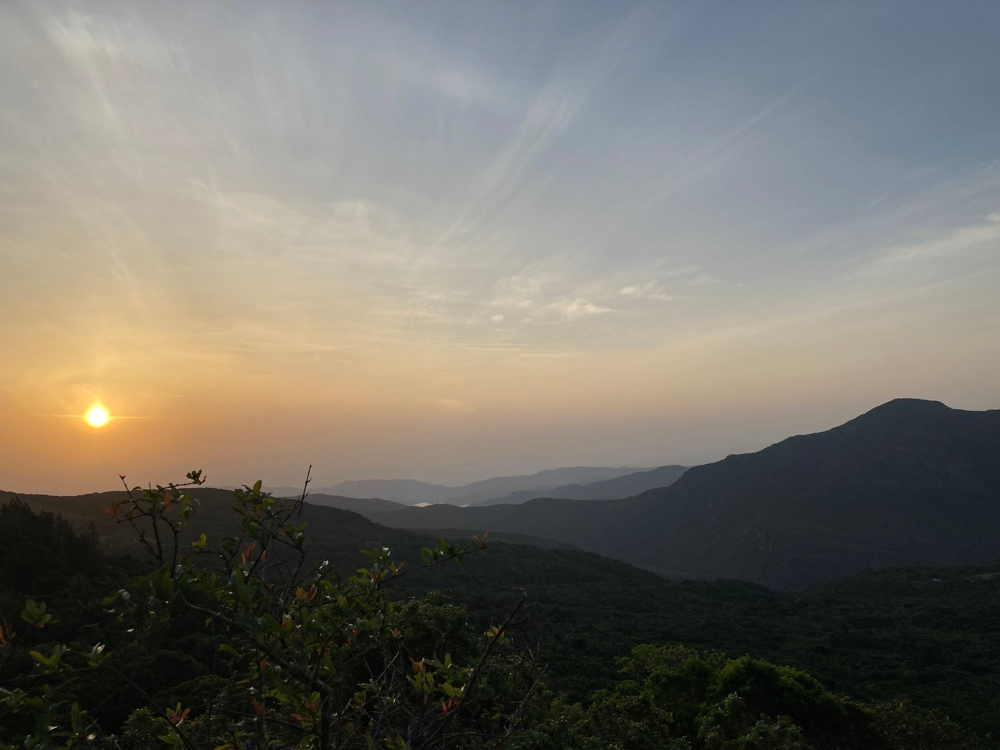
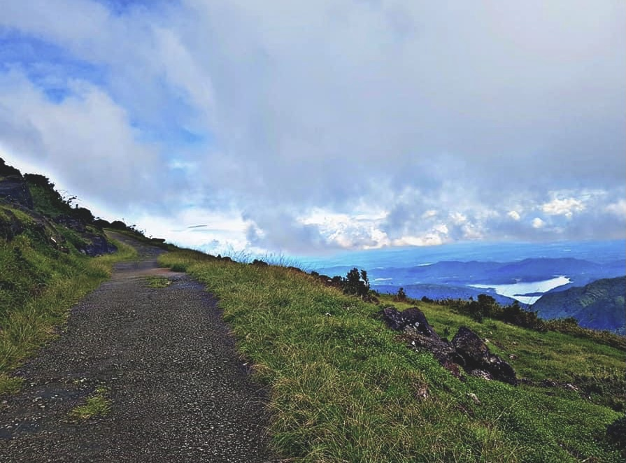
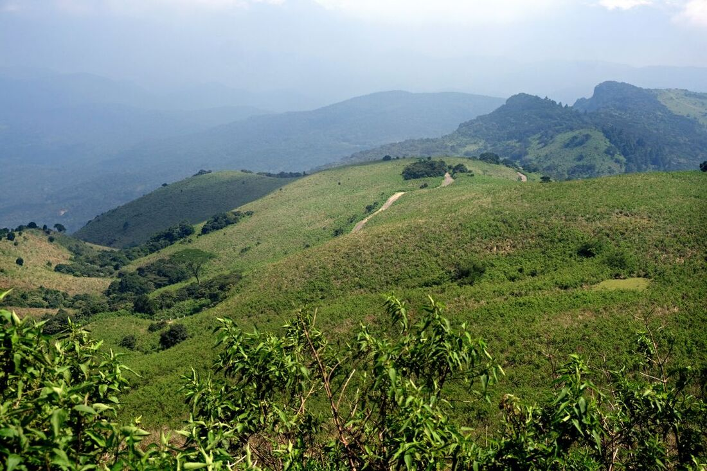
Riverston is a beautiful natural destination located in the central highlands of Sri Lanka, known for its scenic landscapes, cool climate, and biodiversity. It's a popular spot for nature lovers, hikers, and those looking to escape the heat of the lowlands. It sounds like you're describing the Pitawala Pathana viewpoint, known as Mini World's End, located near Riverton in Sri Lanka. Here's some more information. Mini World's End: This nickname refers to the dramatic cliff-edge viewpoint at Pitawala Pathana. It offers stunning panoramic views of the surrounding area, similar to the famous World's End viewpoint in Horton Plains National Park but on a smaller scale.